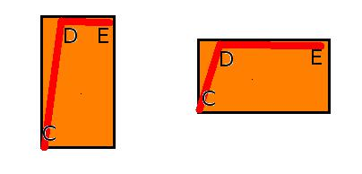

Oranssi alue eli kuumennus
 Välillä C-D lasi kuumennetaan työlämpötilaan. Tämä kuumennus voi olla nopea.
Perinteisesti lasi kuumennettiin mahdollisimman nopeasti, uunin täydellä teholla.
tarkoituksena oli kiteytymisen eli devitrifioinnin välttäminen.
Nykyiset sulatuslasit vastustavat kiteytymistä, ja usein hidastetaan tätäkin vaihetta hiukan,
jotta lasi pehmiää tasaisesti.
Nopeassa kuumennuksessa lasi on yläpinnaltaan juoksevampaa
ja varsinkin vajutuksessa
lasi liikkuu silloin arvaamattomammin.
Välillä C-D lasi kuumennetaan työlämpötilaan. Tämä kuumennus voi olla nopea.
Perinteisesti lasi kuumennettiin mahdollisimman nopeasti, uunin täydellä teholla.
tarkoituksena oli kiteytymisen eli devitrifioinnin välttäminen.
Nykyiset sulatuslasit vastustavat kiteytymistä, ja usein hidastetaan tätäkin vaihetta hiukan,
jotta lasi pehmiää tasaisesti.
Nopeassa kuumennuksessa lasi on yläpinnaltaan juoksevampaa
ja varsinkin vajutuksessa
lasi liikkuu silloin arvaamattomammin.
Työlämpötilan korkeus valitaan tehtävän mukaan ja se määritellään jäljempänä.
Työlämpötila ja haudutusaika valitaan tehtävän laadun mukaan. D ja E.
Nämä kaksi arvoa riippuvat toisistaan.
Lämpötyö
Tuota riippuvuutta kuvataan usein sanalla lämpötyö.
Sillä tarkoitetaan lämmön ja ajan yhteisvaikutusta.
Sama vaikutus saadaan kuumemmassa lyhyemmällä ajalla
tai matalammassa lämmössä lisäämälla aikaa.

Yllä molemmissa kuvissa polttokäyrän alle jää samankokoinen alue.
Vasemmalla se on kuumempi
ja oikealla aika on pidempi.
Se on tapauskohtaisesti kokeiltava.
Mitään kaavaa en osaa antaa montako minuuttia pidempi aika
vastaa 10 astetta korkeampaa lämpötilaa.
Alkujäähdytys
Tämä osuus E-F on luonnollinen kuumennuksen loppujakso.
Kohdassa E haluttu lämpövaikutus on saatu ja lasi jäähdytetään
aluksi niin nopeasti että sen liikkuminen lakkaa.
Joissakin töissä on alkujäähdytys aloitettava hieman etuajassa,
eli jätettävä lasille hieman varaa vajua jäähdytyksen aikana.
Alkujäähdytys jatkuu mahdollisimman lähelle muunnosalueen yläreunaa.
Bullseyen suositus on jäähdyttää 500 C asti. Piste F.
Tähänkin on poikkeuksia, jotka tulevat esiin jäljempänä.